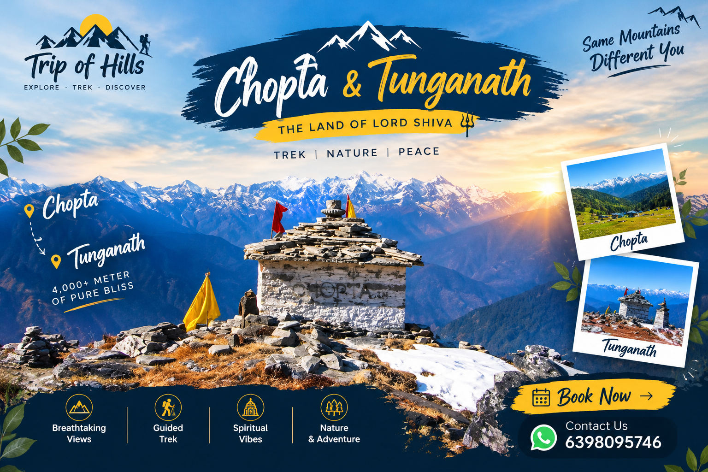

Begin your Himalayan journey with a scenic drive from Rishikesh to the beautiful Sari Village.
📍 Route: Rishikesh → Sari Village
🚗 Drive Distance: 190 km
⏱️ Travel Time: 7–8 hours
Trek through beautiful mountain trails to reach the peaceful Deoriatal Lake, surrounded by magnificent Himalayan scenery.
🥾 Trek Distance: 3 km
⏱️ Trek Duration: 1–2 hours
Trek from Deoriatal towards Tala Village and continue your journey by road to Baniyakund.
🥾 Trek Distance: 10 km
⏱️ Trek Duration: 6–7 hours
🚗 Drive Distance: 15 km
⏱️ Drive Duration: 45 minutes
🛖 Accommodation: Cottages / Swiss Camp
Drive from Baniyakund to Chopta, then trek towards the sacred Tungnath Temple and the spectacular Chandrashila summit. Return to Baniyakund after the trek.
🥾 Trek Distance: 9–10 km, both ways
⏱️ Trek Duration: 7–8 hours
🚗 Drive Distance: 5 km one way
⏱️ Drive Duration: 15 minutes one way
📈 Difficulty Level: Moderate
🍲 Meals: Hot lunch
Enjoy the final views of the Himalayas before driving back to Rishikesh, carrying wonderful memories of your trek.
📍 Route: Baniyakund → Rishikesh
🚗 Drive Distance: 190 km
⏱️ Travel Time: 7–8 hours